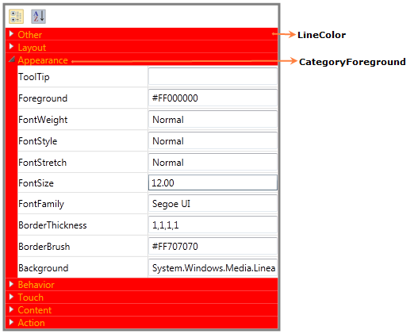

Blendability
The PropertyGrid control can easily be editable in blend. You can edit the template of the PropertyGrid control to give a good look and feel for the control using Expression Blend.
Using Blendability support in an Application
Create the PropertyGrid control using Blend. After creating the PropertyGrid control using Blend, select it and go to “Object” -> “Edit Style” -> “Edit a Copy” to edit the Template of the PropertyGrid control.

Figure 1155: Blend Open New Project
This will open a dialog (below) where you can give a name of your own style and define exactly where you would like to store it.

Figure 1156: Creating Style Resource
What’s produced through the set of steps is quite a bit of XAML which is placed within your application. This XAML represents the default style for the PropertyGrid control.

Figure 1157: Objects and Timeline
Now you can edit each part in the template and create custom look and feel for the control.
Background and Foreground support
You can customize the foreground and background of the PropertyGrid using the following properties,
· LineColor
· ViewBackground
· CategoryForeground
Using Background and Foreground support in an Application
Using LineColor, you can set the background for category heading while grouping.Using CategoryForeground, you can set the foreground for category heading.

Figure 1158: PropertyGrid
Properties
Table 70: Grouping and SortingTable
|
Property |
Description |
Type |
Data Type |
Reference links |
|
ViewBackground |
Sets the background for the PropertyGrid control. |
DependencyProperty |
Brush |
|
|
LineColor |
Sets the background for category heading while grouping. |
DependencyProperty |
Brush |
|
|
CategoryForeground |
Sets the foreground for category heading. |
DependencyProperty |
Brush |
|
Sample Link
5. Select Start -> Programs -> Syncfusion -> Essential Studio x.x.xx -> Dashboard.
6. Select Run Locally Installed Samples in Silverlight Button.
7. Now expand the PropertyGrid treeview item in the Sample Browser.
8. Choose any one of the samples listed under it to launch.